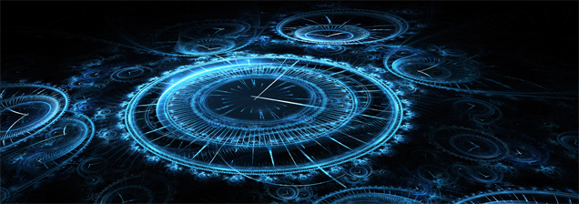

Zamanda Yolculuk: Bilim Kurgunun En Önemli Kavramı
Bilindiği üzere zamanda yolculuk konusunun işlendiği tüm eserlerde bu kavram kurgu yaratıcısının elinde patlar. Çünkü özellikle geçmişe yolculuğun henüz bilimsel bir dayanağı yoktur. Bu konu hakkındaki tüm görüşler insanlar tarafından ortaya atılan hipotezlerdir. Bu fikirler de birbirinden fazlasıyla farklılık içerir. Söz konusu geçmişe yolculuk olduğunda tüm bu nedenlerden dolayı net bir taslak oluşamaz. Geçmişe gidilerek bir değişiklik yapıldığında gelecekte ne olacağını insanoğlu halen kafasında oturtamamıştır. Geleceğin değişeceği, geleceğin asla değişemeyeceği ve geçmişte yapılan değişikliğin aslında her zaman mevcut olduğu ve bir şekilde fark edilmediği, her değişiklik sonucunda paralel evrenler oluşturulduğu gibi görüşler farklı eserlerde farklı formatlarla işlenir. Bilimin geldiği son noktalar ışığında, bilimsel açıdan bakıldığında en mantıklı görünen durum paralel evren görüşünü içeren durum. Kuantum fiziğine, sicim teorilerine en uygun görünen, zamanın asla oyun hamuru gibi oynanamayacağı bir olgu olduğunu ve yapılan değişikliklerin yalnızca ondan sorumlu olan kişinin evrenler arası konumunu değiştireceği bu görüş.
Zamanda Yolculuğun Mümkünatı
Şu anki mevcut bilime göre geçmişe gitmeyi sağlayacak hiçbir bulgu yok. Geleceğe yolculuk denen olay ise kısmen mümkün sayılabilir. Tabii bu ne şekilde bakıldığına göre değişiyor. Aslında geleceğe de yolculuk edilemez, yalnızca bir nesne için zamanın daha hızlı akması sağlanabilir. Bir şekilde kendi için zaman daha hızlı akan bir insan, dünyadaki mevcut zaman akışına döndüğünde orada yıllar geçtiğini görecektir. Tabii geleceğe yolculuktan kasıt bu zaman diliminden bir anda yok olup gelecekte bir yerde ortaya çıkmak sayılırsa geleceğe gidiş de mümkün değil.
Zaman evrenin her noktasında farklı hızlarda akar. Nesnelerin kütlesi ve hızı zamanın akış hızını etkiler. Hızlı bir nesne için zaman daha yavaş akar. Aynı şekilde yüksek kütleçekime maruz kalan bir nesne için de zaman daha yavaş akacaktır. Zaman evrenin başlangıcında Bigbang ile birlikte oluştu ve ilerleyen zamanla birlikte oluşan farklı hızlara ve kütlelere sahip cisimler kendi zaman akış hızlarının sahibi oldu. Evrende bir gözlemciye göre zamanın en hızlı aktığı yer hiçbir hareketin ve kütleçekimin olmadığı bir bölgedir. Tabii daima dinamik ve kaotik olan bu evrende böyle bir nokta bulmak mümkün olmayacaktır.
Bir uzay mekiğine binerek ışık hızına yakın hızlarda hareket eden bir insan Dünya’ya geri döndüğünde kendini yaşamadığı yılların geçmiş olduğu bir gelecekte bulur. Kısaca Dünyadaki ortam için daha fazla zaman geçmiştir. Uzay mekiğiyle bir karadeliğin yörüngesinde dolaşıp Dünya’ya geri dönen kişi için de sonuç aynıdır. Fakat bu sefer bir önceki örneğe nazaran daha az zaman geçmiş olur.
Dördüncü Boyut Olarak Zaman
Zaman dördüncü boyut olarak ele alındığında ise geçmişe doğru zamanda yolculuk mümkün sayılabilir. Albert Einstein’ın kanıtlanan Görelilik Teorilerine göre uzayzaman isminde bütün bir kavramdan bahsetmek mümkün. Kütleçekim ve hız değerlerinin uzayzamanı, yani uzunlukları ve zamanın işleyiş hızını etkilemesi bu teoriler ile ilk defa ortaya atıldı. Zaman da bir üst boyuttan bakıldığında bir uzunluk birimi olabilir ve mevcut boyutta bu uzunluğun anlık olarak teker teker birer parçasının gözlemlendiği söylenebilir. İki boyutlu bir evrende yaşayan canlıların üç boyutlu nesnelerin yalnızca bir kesitini görebileceği, onları yalnızca bu evrende görünen gölgeler şeklinde algılayabilecekleri gibi. Tabii bugünkü bilime göre bunların gerçek sayılmamasının nedeni bir üst boyuta geçmenin mümkün olmaması. Bu şekilde farklı boyutlar olduğunu kanıtlamanın dahi bir yolu yok. Fakat bilim her geçen yıl biraz daha yaklaşıyor. Henüz öbür tarafına geçmenin imkansız sayılacağı bir filtreye rastlanmış değil. Bilimin anafikrine göre böyle bir durma noktasının olması da mümkün değil.
Zamanda Yolculuk Paradoksları
Geçmişe yolculuk söz konusu olduğunda ilk kafa kurcalayan sorun oluşacak paradokslardır. Geçmişe gidip bir değişiklik yapan insanın, geçmişte kendini oluşturan şartları yok etmesinin sonucu doğacak sorulardır bunlar. En popüleri Büyükbaba Paradoksudur. Bir insanın kendi doğmadan önceki zamana gidip büyükbabasını öldürmesi fikriyle başlar. Kendi doğmadan önce doğmasını sağlayacak faktörleri yok eden biri gelecekte var olamaz, gelecekte var olamayan bir insan ise geçmişe gidip büyükbabasını öldüremez.
Bu problemi çözen en mantıklı görüş ise paralel evren fikridir. Zaman işledikçe her an farklı bir olayın gerçekleştiği bir zaman dallanması oluşur. Sürekli olarak zamanın farklı bir şekilde işlediği yeni evrenler oluşur. Nesneler ve bilinçler de bu dallanmalar içinde bir yolu izler. Yan katmanlarda daimi olarak alternatif zaman çizgilerinin aktığı bir evren modeli düşünüldüğünde, büyükbabasını öldüren insan artık gelecekte doğmadığı farklı bir paralel evrene geçmiştir. Artık başlangıçta geçmişe döndüğü evrenin içinde değildir.

Kimi eserler zamanı çok rahat kesip biçebilmek için ortaya çok basit çözümler atar. İnsanın farklı bir zamandaki kendiyle karşılaşması sonucunda daima bu eserlerde Dünya’nın veya evrenin yok olacağı düşüncesi dile getirilir. Tabii karakter daima kendiyle karşılaşır, hiçbir şey yok olmaz.
Filmlerde, kitaplarda veya bunun gibi farklı alanlardaki çeşitli eserlerde zamanda yolculuk konusunda hep bir problem çıkmasının nedeni işte bu belirsizlikler. Eserlerde bu konu ele alındığında daima bir pürüz çıkması dikkatli takip edenlerin gözünden kaçmaz.
Bir yandan da geçmişe gidip yapılan değişikliklerin aslında Kaos Teorisi ve Kelebek Etkisi’ne göre geri almanın hiçbir yolu yoktur. En ufak değişiklikler, bir insan için bir nefes alış, bir göz kırpış dahi Dünya’nın geleceğini yeterince zaman geçtiğinde çok büyük şekilde etkileyecektir. Gerçekleşen tüm olayların kökenine derinlemesine inildiğinde çok basit şeylerin onları oluşturduğu gözlemlenir. Geçmişe değil insan, en ufak bir veri gitse dahi gelecek çok farklı bir hal alacaktır.
Zaman Kavramının Isıyla Bağlantısı
Evrenin ve zamanın temel yapısını anlattığım ısıya dair yazıda bahsettiğim entropi kavramı aslında zamanın temel yapıtaşlarından biri sayılabilir. Termodinamik kavramlarından biri olan, evrenin git gide daha fazla kaosa sürüklenmesini, daha düzensiz ve daha düşük enerjiye sahip olma yatkınlığı olan entropi; zaman ilerledikçe daha da artar. Zamanda yolculuk ise evrenin bu dinamiğini bozacaktır. Geçmişe gitmek daha düzensiz bir nesneyi daha düzenli, geleceğe gitmek ise daha düzenli bir nesneyi daha düzensiz bir zaman dilimine aktarmak anlamına gelir. Tabii nesnenin evrende ve o zaman diliminde bir anda yok olması da aynı şekilde entropiye aykırıdır.
Kimi eserlerde zaman yolculuk kurgusu işlendiğinde zaman hiç umursanmadan, istendiği gibi şekillendirilebilir. Bu eserlerde geçmişte çok rahat değişiklikler yapılır ve geleceğe gidildiğinde farklı şekilde gelişmiş olan bu zaman dilimiyle birlikte yaşanır. Örneğin Geleceğe Dönüş film serisi, Doctor Who dizisi, Harry Potter’ın yeni kitabı olan Cursed Child bu kavramı bu şekilde işler. Bu üzerinde kafa yorulmamış bir kurgu şeklidir. Zaman tek bir çizgide ilerler ve geçmişteki değişikliklerin sonuçları direkt olarak gözlemlenir.
Zamanda yolculuk kavramının çok daha başarılı olduğu bir kurgu çeşidi daha var. Bunlarda geçmişte ne yapılırsa yapılsın gelecek asla değişmez. Aslında daima geçmişte o olay yaşanmıştır, fakat bunu gerçekleştiren kişilerin geçmişe gitmeden önce bundan bir şekilde haberi yoktur. İlk Terminator filmi, Interstellar filmi bu yapıyı kullanır. Terminator’ın devam filmlerinde ise ilk filmdeki başarılı zaman yapısı bozulmuştur.
Zamanın paralel evrenler aracılığıyla işlediği düşüncesini canlandırmak ve eseri takip edenlere aktarmak oldukça zor olduğundan bu formatı eserlerde bulmak zor. Fringe dizisinde buna yakın bir kurgu mevcut. Dikkatli izlendiğinde dizide oldukça önemli bir yere sahip olan makinenin defalarca farklı gerçekliklerde zamanda yolculuğa maruz tutulduğu ve karakterlerin her gerçeklikte bir önceki hareketine devam ettirdiği fark edilebilir.